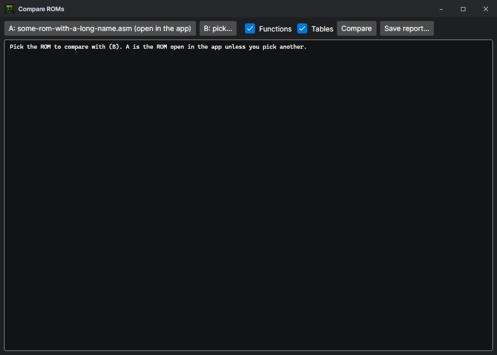
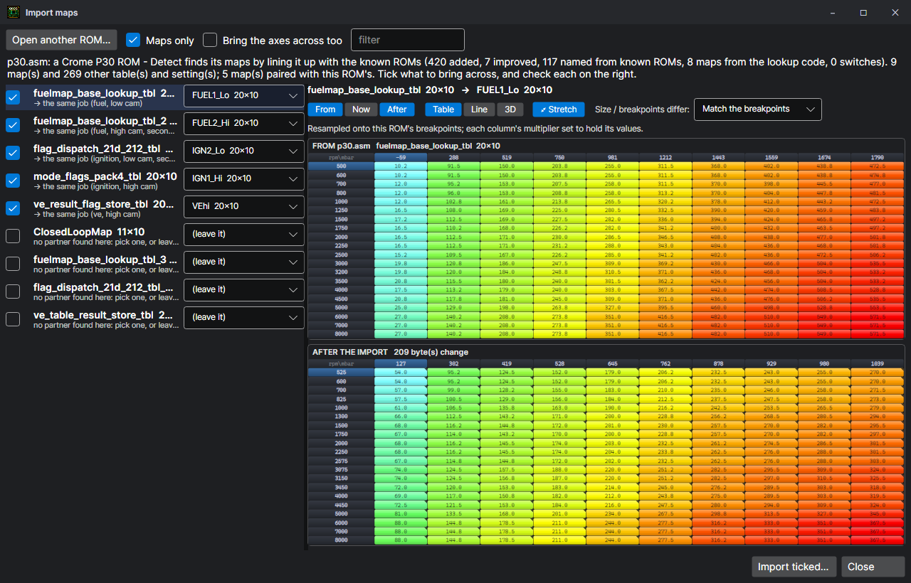

Bin tool, Compare, Import maps
Three tools for working across ROMs and chips.
Bin tool
File > Bin tool… — 32 KB ROMs and 64 KB chips. The ECU sees 32 KB; a 64 KB chip (27C512, SST27SF512) holds two, and the ECU runs whichever half its top address line picks.
- Make a 64 KB image from one ROM (in the upper half, for a board with A15 tied high) or from two (two tunes on one chip, picked by a switch on that line).
- Split a 64 KB image back into its two 32 KB halves.
Compare

File > Compare… (Ctrl+Shift+M) sets the ROM open here beside another .bin or .asm. Routines are matched by the shape of their code, so one that moved is not reported as changed; the tables are compared cell by cell. The result says plainly when only calibration data changed.
Import maps

Tools > Import maps… brings the tune from another ROM — even another ROM family — into this one. Each of its tables is paired with the one here that does the same job (the same page row, the same name, or the fuel / ignition / VE map for the same cam), the values move in real units through each ROM's own formula, and a map whose breakpoints differ is resampled onto these (by breakpoints, stretched end to end, or cell for cell). All three are previewed in the Table, Line and 3D views, and the whole import is one undo step.